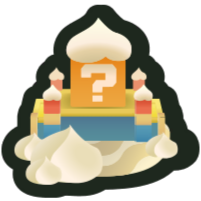

Royaume des Fleurs
Le royaume des fleurs est composé de 6 régions se trouvant autour
d’un archipel central
La plaine des Tuyaux est un plateau montagneux de roches
hexagonales, ressemblant à des Tuyaux. Au sud du continent se trouve
une petite île.
Le Mont Nébuleux est constitué d’une grande zone de nuages rose vif
qui se trouvent au sommet d'une montagne courte et glacée.
La zone des Chutes dorées est un paysage polygonal sombre.
De grandes structures octaédriques flottent dans le ciel, et
certaines d'entre elles versent des cascades dorées dans le
paysage en dessous.

Le Désert Cuisant est un désert aride de sable blanc. Le monde
contient un puzzle où le joueur doit se tenir sur trois boutons avec
des symboles pour ouvrir une porte.
Les Mines Fongiques se trouvent dans une forêt de champignons avec
un système de grottes souterraines où l'on peut trouver des
temples en ruines.
Le Volcan Végétal est une caverne volcanique remplie de magma et
envahie par le lierre. La grotte contient plusieurs chemins divisés,
dont certains sont bloqués par des rochers.
Les Îles Florales sont un petit archipel au centre du royaume des
fleurs, comprenant de nombreuses îles de couleurs et de climats
différents. Le château de Bowser plane au-dessus du centre des îles.
L’archipel sert de monde principal connecté aux six mondes numérotés
du jeu qui l'entourent, et présente ses propres niveaux, y
compris sous-marins et souterrains.
Le Monde Spécial est un monde bonus secret conçu pour tester les
compétences du joueur. C'est le seul monde du jeu qui ne
contient pas de graine royale et qui n'est pas requis pour
terminer le jeu. Il est situé dans le ciel et est composé de
plusieurs plates-formes flottantes en forme de fleur.
Le Royaume des Fleurs est dirigé par le prince Florian, une chenille
verte avec une fleur sur la tête. Il est très proche de ses sujets
et souhaite leur bien. Son royaume est peuplé de Poplins, des
créatures avec des bulbes de fleurs en guise de chapeau, mais aussi
de fleurs Cancan, ce sont des fleurs jaune-oranges qui parlent. Le
Royaume des Fleurs est situé très proche du Royaume Champignon, le
royaume dans lequel vit Mario, ils s’agit même de deux contrées
voisines. Une mer sépare ces deux royaumes.